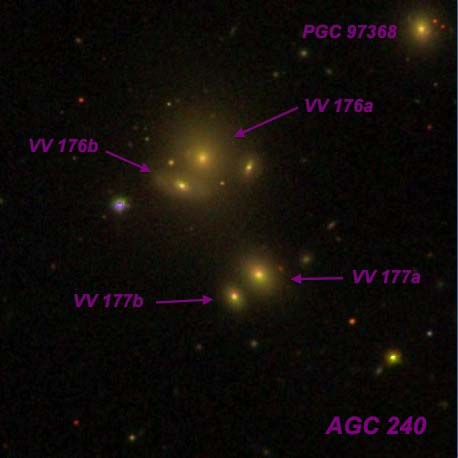
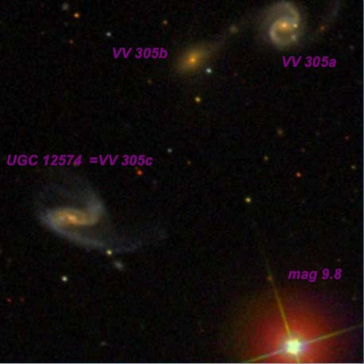
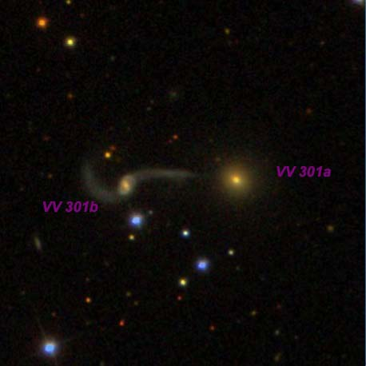
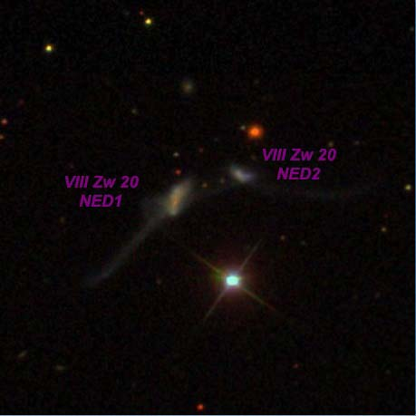
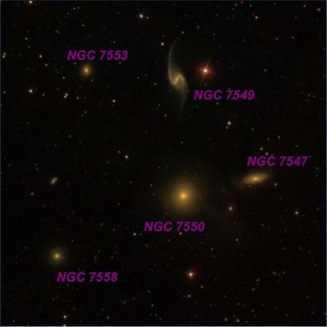
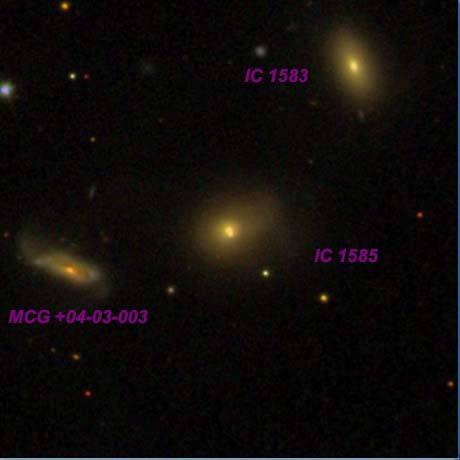
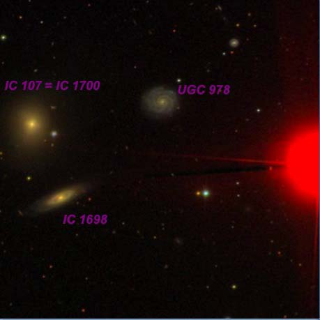
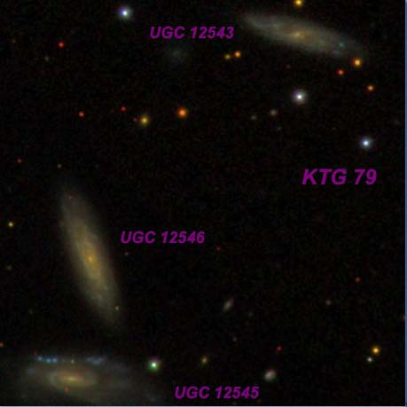
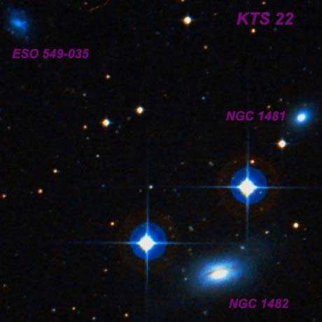
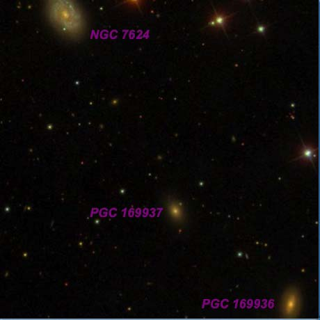

Interacting Galaxies, Trios and Groups from Lake Sonoma
OR (12/1/13): Interacting Galaxies, Trios and Groups from Lake Sonoma by Steve Gottlieb
On Sunday, December 1st, Bob Douglas and I decided to take a chance on observing at Lake Sonoma, northwest of Healdsburg in Sonoma County. Weather conditions looked pretty iffy in the afternoon, with a huge bank of clouds right along the coast that seemed to be pushing inland. The Sunday afternoon traffic driving north on 101 past Santa Rosa and into the Sonoma vineyards was very light, and the ride took less than 90 minutes from Albany. When I pulled into the Lone Rock lot about 20 minutes before sunset, I found that Bob had arrived quite a bit earlier, but had decided to wait before setting up his 28-inch scope as the conditions looked pretty bleak. Even as the sky darkened after sunset, there was no significant improvement, though I decided to go ahead and set up my 24-inch Starstructure dob as I preferred to do that before it was dark.
By the time astronomical twilight ended (~6:30) much of the sky had cleared and by 7:00 PM we were astonished to find nearly perfectly clear skies. Bob quickly set his large scope up and spent the evening giving a private sky tour to a former colleague from San Francisco State University. We both observed from roughly 7:00 to 12:30 and although we quit relatively early, I was surprised to have logged over 50 objects, mostly trios, interacting pair and small groups of galaxies. Conditions were pretty good -- SQM-L readings were in the 21.3-21.4 range, which is pretty typical of Lake Sonoma (blue/green light pollution zone), there was no wind or dew and what had earlier looked like a futile attempt to observe turned into an excellent night!
The following observations were made with my 24-inch Starstructure, equipped with a Servocat drive and ArgoNavis DSCs. Typically, objects were found using either a 21mm Ethos (124x) or a 13mm Ethos (200x), but then observed for details with a 6mm Delos (375x). Seeing was not steady enough to support higher power. All images are from the Sloan Digital Sky Survey ( http://www.sdss.org/ ) except for the southern triple KTS 22 , which is from the www.wikisky.org/ . The Vorontsov-Velyaminov Catalogue of Interacting Galaxies is available from Alvin Huey as an observing guide at http://faintfuzzies.com/DownloadableObservingGuides2.html .
Steve Gottlieb

VV 176 and VV 177 in AGC 240 01 42 06 +07 39.8
VV 176a appeared fairly faint, small, round, 18" diameter. A mag 14.5-15 star lies 42" SE. VV 176 is a tight double system (15" separation) and at 375x VV 176b occasionally "popped" as an extremely faint "star" on the SE edge. VV 176 = UGC 1191 is the brightest member of AGC 240 (distance ~800 million l.y.) with VV 177 = MCG +01-05-022 just 0.9' SW and PGC 97368 1.9' NW. VV 177 was a very faint glow, very small, round, 15" diameter. A mag 16.4v companion at the SW edge was not seen. PGC 97368 was extremely faint, round, 8" diameter. I also picked up PGC 3623196 further southwest in the cluster, which was slightly brighter than PGC 97368 and a similar size.

VV 305 23 23 36 +19 35 06 2.7' diameter
VV 305a = CGCG 454-059 is the brightest and the northwest component of VV 305, an interacting triplet extending 2.7' NW to SE. At 375x it appeared fairly faint, small, round, 24" diameter. A mag 14 star lies 1.2' W and a mag 9.8 star is 3' S. VV 305a is a face-on barred spiral with a faint tidal tail extending NW and a connecting arm towards VV 305b , just 55" ESE. VV 305b appeared very faint, very small, round, 12" diameter. VV 305c = UGC 12574, situated 2.4' NE of the mag 9.8star and 2.7' SE of brighter VV 305a, appeared faint, fairly small, elongated 2:1 or 5:2 E-W, ~28"x12", even surface brightness. I had the impression that the brighter portion was a bar embedded in an extremely faint halo. On the SDSS image, VV 305c was confirmed to be a barred spiral with a stretched tidal arm on the east end extending SW, perhaps from interaction with VV 305a and/or VV 305b. Both VV 305a and VV 305c have identical redshifts of z = .04 (~500 million l.y.).

VV 301 = Arp 98 01 32 11 +32 06 10 1.0' diameter
At 260x, the elliptical companion to the west (right) was easily visible as a fairly faint, small round glow, 15" diameter, with an even surface brightness. Forms a close pair with UGC 1095 , just 1' E. Only the core of UGC 1095 was occasionally visible as an extremely faint, very small, round, 10" glow with a mag 13.8 star nearly attached on the south side [20" from center]. The very low surface brightness tidal arms (one extends directly west to MCG +05-04-066 ) were not visible. This pair is in Arp's category of "elliptical companion on arm of spiral galaxy"

VIII Zw 20 00 21 17 -08 58 0.9'x0.3'
Using 375x and 500x, the northeast component of VIII Zw 20 appeared extremely faint, very small, ~15" diameter. Situated 0.8' NE of a mag 12.3 star. On the SDSS image, this galaxy is the brighter member of an interacting pair and has long tidal plume to the SE and as well as a very low surface brightness plume to the west. A very small companion is just 35" WNW. I probably picked up the companion (logged as "very faint, extremely small, round, 6" diameter") or possibly a 16th magnitude star which is 24" further north. Located 29' ESE of mag 3.5 Iota Ceti.

HCG 93 23 15 24 +18° 59' 9' diameter This quintet contains five NGC galaxies, four with similar redshifts ( NGC 7547 /7549/7550/7553) and one ( NGC 7558 ) which is likely a background object. NGC 7550 = 93A, the brightest member, was discovered by William Herschel in 1784. It appeared fairly bright, moderately large, irregularly round, 1.0'x0.8', strongly concentrated with a bright core that increases to a very bright small nucleus. Occasionally, a bright stellar nuclear pip was visible within the small nucleus. NGC 7547 = 93C, just 3.1' WNW, was missed by William but discovered by his son John in 1827. It appeared fairly faint, moderately large, elongated 5:2 ~E-W, strongly concentrated with a nearly round, small bright core. On the north side is NGC 7549 = 93B, a moderately bright glow, elongated 3:2 N-S, ~60"x40". Contains a brighter central region with only a weak, broad concentration towards the center. A mag 11 star lies 1.4' WNW of center. NGC 7553 = 93D is 3.8' ENE of NGC 7549 and is fairly faint, small, round, 20" diameter. Contains a faint, quasi-stellar nucleus. PGC and Megastar only identify this galaxy as CGCG 454-15 . Finally, NGC 7558 = 93E on the SE side of the group is fairly faint, small, round, 20" diameter, weak concentration. Nearly collinear with two mag 14.5 stars [22" separation] located ~2.8' S.

IC 1585 triplet 00 47 14 +23° 03' 2.6' diameter This triplet consists of two IC galaxies (1583 and 1585), which were discovered visually in November of 1897 by Stephane Javelle using the 30-inch f/23 refractor at the Nice observatory in France. He missed the much fainter third component MCG +04-03-003 . IC 1585 appeared fairly faint, very small, round, 18" diameter, contains a very small very bright nucleus. This compact galaxy has a very high surface brightness. IC 1583 (just 1.5' NW) was just slightly fainter, very small, slightly elongated, 18"x15", contains a very small bright nucleus, high surface brightness. Finally, MCG +04-03-003 1.2' ESE, was extremely faint, very small, ~10" diameter. Required averted vision and was only visible part of the time.

IC 107 trio 01 25 25 +14 51 3' diameter
This little trio has problems with the IC identifications. UGC 978 , the faintest member, is misidentified as IC 107 in the UGC, HyperLeda, Megastar and Uranometria 2000.0. It appeared faint, small, slightly elongated ~E-W, weak concentration, overall low surface brightness (Sc face-on). Situated 3.6' ENE of a mag 10 star (bright red star in the SDSS image). IC 1698 , an inclined spiral, is moderately bright, fairly small, elongated 2:1 WNW-ESE, 0.6'x0.3', small bright core. IC 1699 is probably a duplicate observation of this same galaxy. IC 107 = IC 1700, the brightest in the triplet, was discovered by both Lewis Swift in 1890 and independently by Stephane Javelle in 1896. Stephane assumed it was a new discovery as Swift's position was poor. This fairly bright glow was small, round, 20", high surface brightness. Gradually increases towards the center, then a sharp stellar nucleus. A mag 14.5 star is at the SW edge.

KTG 79 23 21 37 +27 05 42 3.3' diameter
At 375x UGC 12546 = KTG 79B was the brightest in the triplet and appeared very faint to faint, very elongated 7:2 SSW-NNE, 35"x10", low even surface brightness. Slightly brighter of a pair with UGC 12545 = KTG 79C 1.0' S with UGC 12543 = KTG 79A 2.6' NW. UGC 12545, the second brightest member, appeared very faint, elongated 5:2 E-W, 0.5'x0.2', low surface brightness. A mag 15.5 star lies 40" W. UGC 12543 was extremely faint, fairly small, elongated 2:1 ~WSW-ENE, ~24"x12", but has a very low surface brightness and so the dimensions and orientation were difficult to gauge. A mag 15 star is 30" S and a mag 17.3 star was suspected just off the west end.

KTS 22 03 54 44 -20 26 12 9.3' diameter
NGC 1482 = KTS 22B is the brightest member of this physical triplet. It appeared moderately bright to fairly bright, fairly large, oval 5:3 WNW-ESE, ~1.5'x0.9'. Contains a large bright core that increases to a very small, bright nucleus. Surrounding the core is a very low surface brightness halo. Forms a right triangle with two bright stars; mag 8.6 HD 24694 2.3' ENE and mag 8.6 HD 24672 2.6' NNW. The dust lane in this IR-luminous starburst galaxy was not seen. NGC 1481 = KTS 22A lies 5.0' NW and appeared fairly faint, fairly small, oval 3:2 NW-SE, 30"x20", broad concentration. Between the two galaxies is mag 8.6 HD 24672 and a mag 12.5 star is less than 1' SE. ESO 549-035 = KTS 22C lies 8.7' ENE and appeared extremely faint, small, round, only occasionally glimpsed as a dim patch with no structure. A mag 13.5 star lies 2.8' E.

NGC 7624 trio 23 20 22.6 +27 18 56 8' diameter
NGC 7624 was discovered by Jean Marie Stephan with the 31-inch reflector at the Marseille Observatory in 1878. At 375x it appeared fairly faint or moderately bright, fairly small, oval 4:3 SSW-NNE, weak concentration, mottled or patchy appearance. A mag 16 star is just visible at the south edge and a mag 12.5 star is 1.5' WNW. PGC 169937 lies 4.8' SW and appeared very faint, small, roundish, ~18" diameter, low surface brightness. PGC 169936 , another 3.2' SW, was faint, small round, 15" diameter, fairly high surface brightness with a crisply defined edge. Just 55" further SW is MLB 548, a very nice 7" pair of mag 11 stars.